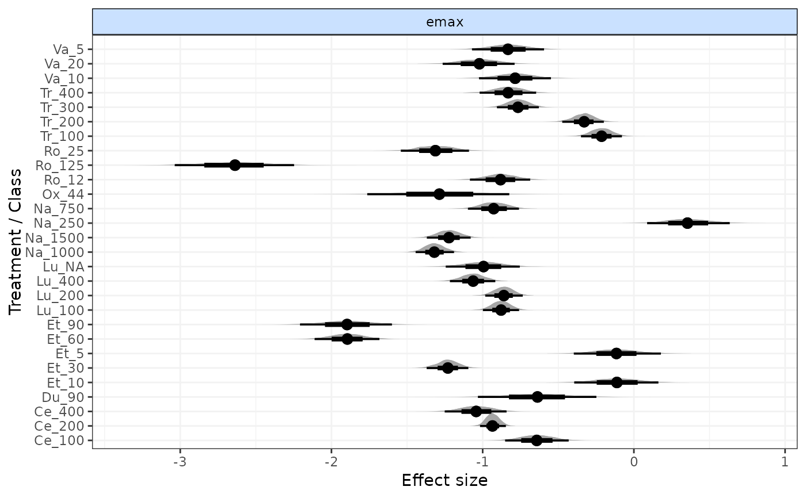

Run MBNMA time-course models
mb.run.RdFits a Bayesian time-course model for model-based network meta-analysis (MBNMA) that can account for repeated measures over time within studies by applying a desired time-course function. Follows the methods of Pedder et al. (2019) .
Usage
mb.run(
network,
fun = tpoly(degree = 1),
positive.scale = FALSE,
intercept = NULL,
link = "identity",
parameters.to.save = NULL,
rho = 0,
covar = "varadj",
omega = NULL,
corparam = FALSE,
class.effect = list(),
UME = FALSE,
pd = "pv",
parallel = FALSE,
priors = NULL,
n.iter = 20000,
n.chains = 3,
n.burnin = floor(n.iter/2),
n.thin = max(1, floor((n.iter - n.burnin)/1000)),
model.file = NULL,
jagsdata = NULL,
...
)Arguments
- network
An object of class
"mb.network".- fun
An object of class
"timefun"generated (see Details) using any oftloglin(),tpoly(),titp(),temax(),tfpoly(),tspline()ortuser()- positive.scale
A boolean object that indicates whether all continuous mean responses (y) are positive and therefore whether the baseline response should be given a prior that constrains it to be positive (e.g. for scales that cannot be <0).
- intercept
A boolean object that indicates whether an intercept (written as
alphain the model) is to be included. If left asNULL(the default), an intercept will be included only for studies reporting absolute means, and will be excluded for studies reporting change from baseline (as indicated innetwork$cfb).- link
Can take either
"identity"(the default),"log"(for modelling Ratios of Means (Friedrich et al. 2011) ) or"smd"(for modelling Standardised Mean Differences - although this also corresponds to an identity link function).- parameters.to.save
A character vector containing names of parameters to monitor in JAGS
- rho
The correlation coefficient when modelling within-study correlation between time points. The default is a string representing a prior distribution in JAGS, indicating that it be estimated from the data (e.g.
rho="dunif(0,1)").rhoalso be assigned a numeric value (e.g.rho=0.7), which fixesrhoin the model to this value (e.g. for use in a deterministic sensitivity analysis). If set torho=0(the default) then this implies modelling no correlation between time points.- covar
A character specifying the covariance structure to use for modelling within-study correlation between time-points. This can be done by specifying one of the following:
"varadj"- a univariate likelihood with a variance adjustment to assume a constant correlation between subsequent time points (Jansen et al. 2015) . This is the default."CS"- a multivariate normal likelihood with a compound symmetry structure"AR1"- a multivariate normal likelihood with an autoregressive AR1 structure
- omega
DEPRACATED IN VERSION 0.2.3 ONWARDS (~uniform(-1,1) now used for correlation between parameters rather than a Wishart prior). A scale matrix for the inverse-Wishart prior for the covariance matrix used to model the correlation between time-course parameters (see Details for time-course functions).
omegamust be a symmetric positive definite matrix with dimensions equal to the number of time-course parameters modelled using relative effects (pool="rel"). If left asNULL(the default) a diagonal matrix with elements equal to 1 is used.- corparam
A boolean object that indicates whether correlation should be modeled between relative effect time-course parameters. Default is
FALSEand this is automatically set toFALSEif class effects are modeled. Setting it toTRUEmodels correlation between time-course parameters. This can help identify parameters that are estimated poorly for some treatments by allowing sharing of information between parameters for different treatments in the network, but may also cause some shrinkage.- class.effect
A list of named strings that determines which time-course parameters to model with a class effect and what that effect should be (
"common"or"random"). For example:list(emax="common", et50="random").- UME
Can take either
TRUEorFALSE(for an unrelated mean effects model on all or no time-course parameters respectively) or can be a vector of parameter name strings to model as UME. For example:c("beta.1", "beta.2").- pd
Can take either:
pvonly pV will be reported (as automatically outputted by R2jags).plugincalculates pD by the plug-in method (Spiegelhalter et al. 2002) . It is faster, but may output negative non-sensical values, due to skewed deviances that can arise with non-linear models.pd.kl(the default) calculates pD by the Kullback–Leibler divergence (Plummer 2008) . This will require running the model for additional iterations but will always produce a sensical result.poptcalculates pD using an optimism adjustment which allows for calculation of the penalized expected deviance (Plummer 2008)
- parallel
A boolean value that indicates whether JAGS should be run in parallel (
TRUE) or not (FALSE). IfTRUEthen the number of cores to use is automatically calculated. Functions that involve updating the model (e.g.devplot(),fitplot()) cannot be used with models implemented in parallel.- priors
A named list of parameter values (without indices) and replacement prior distribution values given as strings using distributions as specified in JAGS syntax (see Plummer (2017) ).
- n.iter
number of total iterations per chain (including burn in; default: 20000)
- n.chains
number of Markov chains (default: 3)
- n.burnin
length of burn in, i.e. number of iterations to discard at the beginning. Default is
n.iter/2``, that is, discarding the first half of the simulations. Ifn.burnin` is 0, jags() will run 100 iterations for adaption.- n.thin
thinning rate. Must be a positive integer. Set
n.thin > 1`` to save memory and computation time ifn.iteris large. Default ismax(1, floor(n.chains * (n.iter-n.burnin) / 1000))`` which will only thin if there are at least 2000 simulations.- model.file
The file path to a JAGS model (.jags file) that can be used to overwrite the JAGS model that is automatically written based on the specified options in
MBNMAtime. Useful for adding further model flexibility.- jagsdata
A named list of the data objects to be used in the JAGS model. Only required if users are defining their own JAGS model using
model.file. Format should match that of standard models fitted inMBNMAtime(seembnma$model.arg$jagsdata)- ...
Arguments to be sent to R2jags.
Value
An object of S3 class c("mbnma", "rjags")`` containing parameter results from the model. Can be summarized by print()and can check traceplots usingR2jags::traceplot()or various functions from the packagemcmcplots`.#'
If there are errors in the JAGS model code then the object will be a list
consisting of two elements - an error message from JAGS that can help with
debugging and model.arg, a list of arguments provided to mb.run()
which includes jagscode, the JAGS code for the model that can help
users identify the source of the error.
Time-course parameters
Nodes that are automatically monitored (if present in the model) have the
same name as in the time-course function for named time-course parameters (e.g. emax).
However, for named only as beta.1, beta.2, beta.3 or beta.4 parameters
may have an alternative interpretation.
Details of the interpretation and model specification of different parameters can be shown by using the
summary() method on an "mbnma" object generated by mb.run().
Parameters modelled using relative effects
If pooling is relative (e.g.
pool.1="rel") for a given parameter then the named parameter (e.g.emax) or a numbereddparameter (e.g.d.1) corresponds to the pooled relative effect for a given treatment compared to the network reference treatment for this time-course parameter.sd.followed by a named (e.g.emax,beta.1) is the between-study SD (heterogeneity) for relative effects, reported if pooling for a time-course parameter is relative (e.g.pool.1="rel") and the method for synthesis is random (e.g.method.1="random).If class effects are modelled, parameters for classes are represented by the upper case name of the time-course parameter they correspond to. For example if
class.effect=list(emax="random"), relative class effects will be represented byEMAX. The SD of the class effect (e.g.sd.EMAX,sd.BETA.1) is the SD of treatments within a class for the time-course parameter they correspond to.
Parameters modelled using absolute effects
If pooling is absolute (e.g.
pool.1="abs") for a given parameter then the named parameter (e.g.emax) or a numberedbetaparameter (e.g.beta.1) corresponds to the estimated absolute effect for this time-course parameter.For an absolute time-course parameter if the corresponding method is common (e.g.
method.1="common") the parameter corresponds to a single common parameter estimated across all studies and treatments. If the corresponding method is random (e.g.method.1="random") then parameter is a mean effect around which the study-level absolute effects vary with SD corresponding tosd.followed by the named parameter (e.g.sd.emax,sd.beta.1) .
Other model parameters
rhoThe correlation coefficient for correlation between time-points. Its interpretation will differ depending on the covariance structure specified incovartotresdevThe residual deviance of the modeldevianceThe deviance of the model
Time-course function
Several general time-course functions with up to 4 time-course parameters are provided, but a user-defined time-course relationship can instead be used. Details can be found in the respective help files for each function.
Available time-course functions are:
Correlation between observations
When modelling correlation between observations using rho, values for rho must imply a
positive semidefinite covariance matrix.
Advanced options
model.file and jagsdata can be used to run an edited JAGS model and dataset. This allows
users considerably more modelling flexibility than is possible using the basic MBNMAtime syntax,
though requires strong understanding of JAGS and the MBNMA modelling framework. Treatment-specific
priors, meta-regression and bias-adjustment are all possible in this way, and it allows users to
make use of the subsequent functions in MBNMAtime (plotting, prediction, ranking) whilst fitting
these more complex models.
References
Friedrich JO, Adhikari NKJ, Beyene J (2011).
“Ratio of means for analyzing continuous outcomes in meta-analysis performed as well as mean difference methods.”
Journal of Clinical Epidemiology, 64(5), 556-564.
doi:10.1016/j.jclinepi.2010.09.016
.
Jansen JP, Vieira MC, Cope S (2015).
“Network meta-analysis of longitudinal data using fractional polynomials.”
Stat Med, 34(15), 2294-311.
ISSN 1097-0258 (Electronic) 0277-6715 (Linking), doi:10.1002/sim.6492
, https://pubmed.ncbi.nlm.nih.gov/25877808/.
Pedder H, Dias S, Bennetts M, Boucher M, Welton NJ (2019).
“Modelling time-course relationships with multiple treatments: Model-Based Network Meta-Analysis for continuous summary outcomes.”
Res Synth Methods, 10(2), 267-286.
Plummer M (2008).
“Penalized loss functions for Bayesian model comparison.”
Biostatistics, 9(3), 523-39.
ISSN 1468-4357 (Electronic) 1465-4644 (Linking), https://pubmed.ncbi.nlm.nih.gov/18209015/.
Plummer M (2017).
JAGS user manual.
https://people.stat.sc.edu/hansont/stat740/jags_user_manual.pdf.
Spiegelhalter DJ, Best NG, Carlin BP, van der Linde A (2002).
“Bayesian measures of model complexity and fit.”
J R Statistic Soc B, 64(4), 583-639.
Examples
# \donttest{
# Create mb.network object
network <- mb.network(osteopain)
#> Reference treatment is `Pl_0`
#> Studies reporting change from baseline automatically identified from the data
# Fit a linear time-course MBNMA with:
# random relative treatment effects on the slope
mb.run(network, fun=tpoly(degree=1, pool.1="rel", method.1="random"))
#> Change from version 0.2.2 onwards: corparam=FALSE as default
#> Compiling model graph
#> Resolving undeclared variables
#> Allocating nodes
#> Graph information:
#> Observed stochastic nodes: 417
#> Unobserved stochastic nodes: 163
#> Total graph size: 7701
#>
#> Initializing model
#>
#> Inference for Bugs model at "/tmp/RtmpPNmS3o/file181e12e65434", fit using jags,
#> 3 chains, each with 20000 iterations (first 10000 discarded), n.thin = 10
#> n.sims = 3000 iterations saved
#> mu.vect sd.vect 2.5% 25% 50% 75% 97.5% Rhat
#> d.1[1] 0.000 0.000 0.000 0.000 0.000 0.000 0.000 1.000
#> d.1[2] -0.063 0.044 -0.150 -0.091 -0.063 -0.033 0.021 1.001
#> d.1[3] -0.094 0.018 -0.129 -0.106 -0.094 -0.081 -0.059 1.001
#> d.1[4] -0.095 0.045 -0.183 -0.125 -0.095 -0.065 -0.005 1.003
#> d.1[5] -0.044 0.053 -0.149 -0.080 -0.045 -0.008 0.059 1.001
#> d.1[6] 0.004 0.069 -0.134 -0.043 0.003 0.048 0.141 1.002
#> d.1[7] -0.148 0.036 -0.218 -0.171 -0.148 -0.124 -0.076 1.001
#> d.1[8] -0.027 0.071 -0.174 -0.073 -0.026 0.021 0.107 1.001
#> d.1[9] -0.289 0.048 -0.383 -0.319 -0.289 -0.257 -0.193 1.002
#> d.1[10] -0.304 0.071 -0.440 -0.350 -0.303 -0.258 -0.161 1.002
#> d.1[11] -0.076 0.037 -0.151 -0.101 -0.076 -0.052 -0.004 1.001
#> d.1[12] -0.070 0.037 -0.144 -0.095 -0.070 -0.045 0.001 1.002
#> d.1[13] -0.085 0.046 -0.172 -0.115 -0.085 -0.054 0.004 1.001
#> d.1[14] -0.083 0.061 -0.203 -0.123 -0.083 -0.041 0.040 1.001
#> d.1[15] -0.128 0.026 -0.180 -0.145 -0.127 -0.110 -0.078 1.001
#> d.1[16] -0.135 0.039 -0.212 -0.160 -0.135 -0.108 -0.060 1.001
#> d.1[17] 0.112 0.066 -0.022 0.067 0.113 0.156 0.241 1.001
#> d.1[18] -0.129 0.046 -0.225 -0.159 -0.129 -0.098 -0.040 1.001
#> d.1[19] -0.123 0.078 -0.275 -0.175 -0.122 -0.071 0.026 1.001
#> d.1[20] -0.113 0.050 -0.212 -0.147 -0.113 -0.079 -0.013 1.001
#> d.1[21] -0.428 0.076 -0.577 -0.480 -0.429 -0.378 -0.276 1.001
#> d.1[22] -0.171 0.043 -0.254 -0.200 -0.172 -0.143 -0.089 1.001
#> d.1[23] -0.032 0.041 -0.113 -0.059 -0.032 -0.005 0.049 1.001
#> d.1[24] -0.041 0.042 -0.127 -0.069 -0.042 -0.013 0.039 1.001
#> d.1[25] -0.067 0.042 -0.150 -0.094 -0.067 -0.040 0.015 1.001
#> d.1[26] -0.085 0.064 -0.214 -0.127 -0.084 -0.041 0.039 1.002
#> d.1[27] -0.067 0.065 -0.195 -0.109 -0.067 -0.024 0.059 1.001
#> d.1[28] -0.093 0.064 -0.218 -0.135 -0.093 -0.050 0.035 1.001
#> d.1[29] -0.080 0.067 -0.207 -0.124 -0.080 -0.037 0.053 1.001
#> rho 0.000 0.000 0.000 0.000 0.000 0.000 0.000 1.000
#> sd.beta.1 0.073 0.009 0.057 0.066 0.072 0.078 0.093 1.001
#> totresdev 9298.885 16.969 9268.163 9287.033 9297.973 9309.768 9333.578 1.001
#> deviance 8418.846 16.969 8388.124 8406.993 8417.933 8429.729 8453.539 1.001
#> n.eff
#> d.1[1] 1
#> d.1[2] 2800
#> d.1[3] 3000
#> d.1[4] 850
#> d.1[5] 3000
#> d.1[6] 1700
#> d.1[7] 3000
#> d.1[8] 3000
#> d.1[9] 1700
#> d.1[10] 1900
#> d.1[11] 3000
#> d.1[12] 1700
#> d.1[13] 3000
#> d.1[14] 3000
#> d.1[15] 3000
#> d.1[16] 3000
#> d.1[17] 3000
#> d.1[18] 3000
#> d.1[19] 3000
#> d.1[20] 2800
#> d.1[21] 3000
#> d.1[22] 3000
#> d.1[23] 3000
#> d.1[24] 2100
#> d.1[25] 2300
#> d.1[26] 1200
#> d.1[27] 3000
#> d.1[28] 3000
#> d.1[29] 3000
#> rho 1
#> sd.beta.1 3000
#> totresdev 3000
#> deviance 3000
#>
#> For each parameter, n.eff is a crude measure of effective sample size,
#> and Rhat is the potential scale reduction factor (at convergence, Rhat=1).
#>
#> DIC info (using the rule, pD = var(deviance)/2)
#> pD = 144.0 and DIC = 8562.0
#> DIC is an estimate of expected predictive error (lower deviance is better).
# Fit an emax time-course MBNMA with:
# fixed relative treatment effects on emax
# a common parameter estimated independently of treatment
# a common Hill parameter estimated independently of treatment
# a prior for the Hill parameter (normal with mean 0 and precision 0.1)
# data reported as change from baseline
result <- mb.run(network, fun=temax(pool.emax="rel", method.emax="common",
pool.et50="abs", method.et50="common",
pool.hill="abs", method.hill="common"),
priors=list(hill="dunif(0.5, 2)"),
intercept=TRUE)
#> 'et50' parameters must take positive values.
#> Default half-normal prior restricts posterior to positive values.
#> 'hill' parameters must take positive values.
#> Default half-normal prior restricts posterior to positive values.
#> Change from version 0.2.2 onwards: corparam=FALSE as default
#> Compiling model graph
#> Resolving undeclared variables
#> Allocating nodes
#> Graph information:
#> Observed stochastic nodes: 417
#> Unobserved stochastic nodes: 90
#> Total graph size: 7722
#>
#> Initializing model
#>
#### commented out to prevent errors from JAGS version in github actions build ####
# Fit a log-linear MBNMA with:
# random relative treatment effects on the rate
# an autoregressive AR1 covariance structure
# modelled as standardised mean differences
# copdnet <- mb.network(copd)
# result <- mb.run(copdnet, fun=tloglin(pool.rate="rel", method.rate="random"),
# covar="AR1", rho="dunif(0,1)", link="smd")
####### Examine MCMC diagnostics (using mcmcplots package) #######
# Traceplots
# mcmcplots::traplot(result)
# Plots for assessing convergence
# mcmcplots::mcmcplot(result, c("rate", "sd.rate", "rho"))
########## Output ###########
# Print R2jags output and summary
print(result)
#> Inference for Bugs model at "/tmp/RtmpPNmS3o/file181e343aa1a6", fit using jags,
#> 3 chains, each with 20000 iterations (first 10000 discarded), n.thin = 10
#> n.sims = 3000 iterations saved
#> mu.vect sd.vect 2.5% 25% 50% 75% 97.5% Rhat n.eff
#> emax[1] 0.000 0.000 0.000 0.000 0.000 0.000 0.000 1.000 1
#> emax[2] -0.641 0.106 -0.861 -0.708 -0.639 -0.572 -0.440 1.002 1100
#> emax[3] -0.933 0.046 -1.018 -0.964 -0.935 -0.902 -0.839 1.009 310
#> emax[4] -1.038 0.101 -1.241 -1.107 -1.036 -0.969 -0.843 1.003 950
#> emax[5] -0.639 0.195 -1.018 -0.770 -0.640 -0.511 -0.242 1.002 1400
#> emax[6] -0.116 0.147 -0.398 -0.215 -0.117 -0.018 0.163 1.001 3000
#> emax[7] -1.228 0.074 -1.373 -1.278 -1.231 -1.179 -1.078 1.008 290
#> emax[8] -0.111 0.141 -0.390 -0.204 -0.111 -0.014 0.162 1.001 2200
#> emax[9] -1.896 0.112 -2.116 -1.971 -1.896 -1.820 -1.680 1.012 190
#> emax[10] -1.896 0.159 -2.206 -2.005 -1.898 -1.790 -1.580 1.016 150
#> emax[11] -0.876 0.063 -1.004 -0.918 -0.877 -0.834 -0.755 1.008 320
#> emax[12] -0.860 0.064 -0.986 -0.906 -0.861 -0.816 -0.735 1.005 410
#> emax[13] -1.065 0.078 -1.217 -1.118 -1.066 -1.012 -0.910 1.002 2500
#> emax[14] -0.989 0.128 -1.240 -1.072 -0.988 -0.902 -0.741 1.001 3000
#> emax[15] -1.318 0.067 -1.448 -1.364 -1.321 -1.274 -1.185 1.014 180
#> emax[16] -1.223 0.078 -1.373 -1.276 -1.223 -1.169 -1.071 1.006 490
#> emax[17] 0.359 0.141 0.087 0.261 0.360 0.452 0.635 1.002 1600
#> emax[18] -0.928 0.090 -1.105 -0.988 -0.926 -0.867 -0.754 1.003 730
#> emax[19] -1.285 0.242 -1.755 -1.451 -1.282 -1.119 -0.817 1.001 3000
#> emax[20] -0.883 0.106 -1.099 -0.956 -0.881 -0.809 -0.680 1.002 1000
#> emax[21] -2.644 0.208 -3.052 -2.781 -2.646 -2.507 -2.235 1.007 310
#> emax[22] -1.313 0.116 -1.532 -1.393 -1.315 -1.235 -1.087 1.007 310
#> emax[23] -0.212 0.070 -0.350 -0.259 -0.211 -0.165 -0.074 1.001 3000
#> emax[24] -0.330 0.071 -0.466 -0.379 -0.330 -0.281 -0.192 1.001 3000
#> emax[25] -0.766 0.077 -0.917 -0.818 -0.765 -0.715 -0.619 1.002 1000
#> emax[26] -0.830 0.098 -1.024 -0.896 -0.828 -0.762 -0.644 1.001 2800
#> emax[27] -0.788 0.120 -1.025 -0.869 -0.789 -0.706 -0.556 1.002 1200
#> emax[28] -1.016 0.123 -1.262 -1.102 -1.016 -0.932 -0.784 1.004 520
#> emax[29] -0.833 0.123 -1.086 -0.916 -0.833 -0.749 -0.600 1.003 730
#> et50 0.466 0.045 0.384 0.435 0.464 0.494 0.563 1.002 2400
#> hill 0.583 0.083 0.502 0.522 0.554 0.616 0.824 1.063 73
#> rho 0.000 0.000 0.000 0.000 0.000 0.000 0.000 1.000 1
#> totresdev 837.846 13.642 812.041 828.797 837.317 846.366 865.768 1.003 820
#> deviance -42.194 13.642 -67.998 -51.242 -42.723 -33.673 -14.272 1.003 830
#>
#> For each parameter, n.eff is a crude measure of effective sample size,
#> and Rhat is the potential scale reduction factor (at convergence, Rhat=1).
#>
#> DIC info (using the rule, pD = var(deviance)/2)
#> pD = 92.9 and DIC = 50.2
#> DIC is an estimate of expected predictive error (lower deviance is better).
summary(result)
#> ========================================
#> Time-course MBNMA
#> ========================================
#>
#> Time-course function: emax
#> Data modelled with intercept
#>
#> emax parameter
#> Pooling: relative effects
#> Method: common treatment effects
#>
#> |Treatment |Parameter | Median| 2.5%| 97.5%|
#> |:---------|:---------|-------:|-------:|-------:|
#> |Pl_0 |emax[1] | 0.0000| 0.0000| 0.0000|
#> |Ce_100 |emax[2] | -0.6391| -0.8609| -0.4401|
#> |Ce_200 |emax[3] | -0.9349| -1.0181| -0.8393|
#> |Ce_400 |emax[4] | -1.0360| -1.2414| -0.8428|
#> |Du_90 |emax[5] | -0.6401| -1.0176| -0.2418|
#> |Et_10 |emax[6] | -0.1171| -0.3977| 0.1627|
#> |Et_30 |emax[7] | -1.2311| -1.3735| -1.0784|
#> |Et_5 |emax[8] | -0.1115| -0.3896| 0.1620|
#> |Et_60 |emax[9] | -1.8961| -2.1156| -1.6799|
#> |Et_90 |emax[10] | -1.8982| -2.2064| -1.5801|
#> |Lu_100 |emax[11] | -0.8773| -1.0039| -0.7548|
#> |Lu_200 |emax[12] | -0.8608| -0.9857| -0.7355|
#> |Lu_400 |emax[13] | -1.0665| -1.2166| -0.9095|
#> |Lu_NA |emax[14] | -0.9876| -1.2398| -0.7412|
#> |Na_1000 |emax[15] | -1.3211| -1.4480| -1.1855|
#> |Na_1500 |emax[16] | -1.2231| -1.3728| -1.0710|
#> |Na_250 |emax[17] | 0.3595| 0.0874| 0.6348|
#> |Na_750 |emax[18] | -0.9262| -1.1051| -0.7538|
#> |Ox_44 |emax[19] | -1.2819| -1.7554| -0.8174|
#> |Ro_12 |emax[20] | -0.8812| -1.0989| -0.6799|
#> |Ro_125 |emax[21] | -2.6456| -3.0521| -2.2353|
#> |Ro_25 |emax[22] | -1.3152| -1.5323| -1.0874|
#> |Tr_100 |emax[23] | -0.2107| -0.3505| -0.0740|
#> |Tr_200 |emax[24] | -0.3295| -0.4655| -0.1920|
#> |Tr_300 |emax[25] | -0.7650| -0.9168| -0.6192|
#> |Tr_400 |emax[26] | -0.8279| -1.0241| -0.6443|
#> |Va_10 |emax[27] | -0.7891| -1.0252| -0.5563|
#> |Va_20 |emax[28] | -1.0156| -1.2618| -0.7838|
#> |Va_5 |emax[29] | -0.8332| -1.0859| -0.5999|
#>
#>
#> et50 parameter
#> Pooling: absolute effects
#> Method: common treatment effects
#>
#> |Treatment |Parameter | Median| 2.5%| 97.5%|
#> |:---------|:---------|------:|------:|------:|
#> |Pl_0 |et50 | 0.4639| 0.3845| 0.5629|
#> |Ce_100 |et50 | 0.4639| 0.3845| 0.5629|
#> |Ce_200 |et50 | 0.4639| 0.3845| 0.5629|
#> |Ce_400 |et50 | 0.4639| 0.3845| 0.5629|
#> |Du_90 |et50 | 0.4639| 0.3845| 0.5629|
#> |Et_10 |et50 | 0.4639| 0.3845| 0.5629|
#> |Et_30 |et50 | 0.4639| 0.3845| 0.5629|
#> |Et_5 |et50 | 0.4639| 0.3845| 0.5629|
#> |Et_60 |et50 | 0.4639| 0.3845| 0.5629|
#> |Et_90 |et50 | 0.4639| 0.3845| 0.5629|
#> |Lu_100 |et50 | 0.4639| 0.3845| 0.5629|
#> |Lu_200 |et50 | 0.4639| 0.3845| 0.5629|
#> |Lu_400 |et50 | 0.4639| 0.3845| 0.5629|
#> |Lu_NA |et50 | 0.4639| 0.3845| 0.5629|
#> |Na_1000 |et50 | 0.4639| 0.3845| 0.5629|
#> |Na_1500 |et50 | 0.4639| 0.3845| 0.5629|
#> |Na_250 |et50 | 0.4639| 0.3845| 0.5629|
#> |Na_750 |et50 | 0.4639| 0.3845| 0.5629|
#> |Ox_44 |et50 | 0.4639| 0.3845| 0.5629|
#> |Ro_12 |et50 | 0.4639| 0.3845| 0.5629|
#> |Ro_125 |et50 | 0.4639| 0.3845| 0.5629|
#> |Ro_25 |et50 | 0.4639| 0.3845| 0.5629|
#> |Tr_100 |et50 | 0.4639| 0.3845| 0.5629|
#> |Tr_200 |et50 | 0.4639| 0.3845| 0.5629|
#> |Tr_300 |et50 | 0.4639| 0.3845| 0.5629|
#> |Tr_400 |et50 | 0.4639| 0.3845| 0.5629|
#> |Va_10 |et50 | 0.4639| 0.3845| 0.5629|
#> |Va_20 |et50 | 0.4639| 0.3845| 0.5629|
#> |Va_5 |et50 | 0.4639| 0.3845| 0.5629|
#>
#>
#> hill parameter
#> Pooling: absolute effects
#> Method: common treatment effects
#>
#> |Treatment |Parameter | Median| 2.5%| 97.5%|
#> |:---------|:---------|------:|------:|------:|
#> |Pl_0 |hill | 0.5543| 0.5017| 0.8243|
#> |Ce_100 |hill | 0.5543| 0.5017| 0.8243|
#> |Ce_200 |hill | 0.5543| 0.5017| 0.8243|
#> |Ce_400 |hill | 0.5543| 0.5017| 0.8243|
#> |Du_90 |hill | 0.5543| 0.5017| 0.8243|
#> |Et_10 |hill | 0.5543| 0.5017| 0.8243|
#> |Et_30 |hill | 0.5543| 0.5017| 0.8243|
#> |Et_5 |hill | 0.5543| 0.5017| 0.8243|
#> |Et_60 |hill | 0.5543| 0.5017| 0.8243|
#> |Et_90 |hill | 0.5543| 0.5017| 0.8243|
#> |Lu_100 |hill | 0.5543| 0.5017| 0.8243|
#> |Lu_200 |hill | 0.5543| 0.5017| 0.8243|
#> |Lu_400 |hill | 0.5543| 0.5017| 0.8243|
#> |Lu_NA |hill | 0.5543| 0.5017| 0.8243|
#> |Na_1000 |hill | 0.5543| 0.5017| 0.8243|
#> |Na_1500 |hill | 0.5543| 0.5017| 0.8243|
#> |Na_250 |hill | 0.5543| 0.5017| 0.8243|
#> |Na_750 |hill | 0.5543| 0.5017| 0.8243|
#> |Ox_44 |hill | 0.5543| 0.5017| 0.8243|
#> |Ro_12 |hill | 0.5543| 0.5017| 0.8243|
#> |Ro_125 |hill | 0.5543| 0.5017| 0.8243|
#> |Ro_25 |hill | 0.5543| 0.5017| 0.8243|
#> |Tr_100 |hill | 0.5543| 0.5017| 0.8243|
#> |Tr_200 |hill | 0.5543| 0.5017| 0.8243|
#> |Tr_300 |hill | 0.5543| 0.5017| 0.8243|
#> |Tr_400 |hill | 0.5543| 0.5017| 0.8243|
#> |Va_10 |hill | 0.5543| 0.5017| 0.8243|
#> |Va_20 |hill | 0.5543| 0.5017| 0.8243|
#> |Va_5 |hill | 0.5543| 0.5017| 0.8243|
#>
#>
#>
#> Correlation between time points
#> Covariance structure: varadj
#> Rho assigned a numeric value: 0
#>
#> #### Model Fit Statistics ####
#>
#> Effective number of parameters:
#> pD (pV) calculated using the rule, pD = var(deviance)/2 = 93
#> Deviance = -43
#> Residual deviance = 837
#> Deviance Information Criterion (DIC) = 50
#>
#> The following parameters have Rhat values > 1.02 which could be due to convergence issues:
#> hill
# Plot forest plot of results
plot(result)

###### Additional model arguments ######
# Use gout dataset
goutnet <- mb.network(goutSUA_CFBcomb)
#> Reference treatment is `Plac`
#> Studies reporting change from baseline automatically identified from the data
# Define a user-defined time-course relationship for use in mb.run
timecourse <- ~ exp(beta.1 * time) + (time^beta.2)
# Run model with:
# user-defined time-course function
# random relative effects on beta.1
# default common effects on beta.2
# default relative pooling on beta.1 and beta.2
# common class effect on beta.2
mb.run(goutnet, fun=tuser(fun=timecourse, method.1="random"),
class.effect=list(beta.1="common"))
#> Change from version 0.2.2 onwards: corparam=FALSE as default
#> Compiling model graph
#> Resolving undeclared variables
#> Allocating nodes
#> Graph information:
#> Observed stochastic nodes: 224
#> Unobserved stochastic nodes: 121
#> Total graph size: 4851
#>
#> Initializing model
#>
#> Inference for Bugs model at "/tmp/RtmpPNmS3o/file181ee1837fe", fit using jags,
#> 3 chains, each with 20000 iterations (first 10000 discarded), n.thin = 10
#> n.sims = 3000 iterations saved
#> mu.vect sd.vect 2.5% 25% 50% 75%
#> D.1[1] 0.000 0.000 0.000 0.000 0.000 0.000
#> D.1[2] -0.845 18.033 -31.591 -13.486 -3.059 11.256
#> D.1[3] -27.068 21.946 -76.566 -39.250 -23.218 -10.954
#> D.1[4] -9.588 26.526 -88.345 -23.276 -6.265 8.898
#> D.1[5] -11.235 26.638 -67.047 -27.976 -9.334 5.516
#> D.1[6] -12.643 17.840 -47.589 -24.569 -11.369 -0.757
#> D.1[7] -19.407 31.255 -114.667 -29.257 -11.345 0.208
#> d.1[1] 0.000 0.000 0.000 0.000 0.000 0.000
#> d.1[2] -0.845 18.033 -31.591 -13.486 -3.059 11.256
#> d.1[3] -0.845 18.033 -31.591 -13.486 -3.059 11.256
#> d.1[4] -0.845 18.033 -31.591 -13.486 -3.059 11.256
#> d.1[5] -0.845 18.033 -31.591 -13.486 -3.059 11.256
#> d.1[6] -27.068 21.946 -76.566 -39.250 -23.218 -10.954
#> d.1[7] -9.588 26.526 -88.345 -23.276 -6.265 8.898
#> d.1[8] -9.588 26.526 -88.345 -23.276 -6.265 8.898
#> d.1[9] -9.588 26.526 -88.345 -23.276 -6.265 8.898
#> d.1[10] -9.588 26.526 -88.345 -23.276 -6.265 8.898
#> d.1[11] -11.235 26.638 -67.047 -27.976 -9.334 5.516
#> d.1[12] -12.643 17.840 -47.589 -24.569 -11.369 -0.757
#> d.1[13] -12.643 17.840 -47.589 -24.569 -11.369 -0.757
#> d.1[14] -12.643 17.840 -47.589 -24.569 -11.369 -0.757
#> d.1[15] -12.643 17.840 -47.589 -24.569 -11.369 -0.757
#> d.1[16] -19.407 31.255 -114.667 -29.257 -11.345 0.208
#> d.1[17] -19.407 31.255 -114.667 -29.257 -11.345 0.208
#> d.1[18] -19.407 31.255 -114.667 -29.257 -11.345 0.208
#> d.1[19] -19.407 31.255 -114.667 -29.257 -11.345 0.208
#> d.2[1] 0.000 0.000 0.000 0.000 0.000 0.000
#> d.2[2] -4.077 29.252 -63.505 -22.800 -2.822 15.544
#> d.2[3] 3.928 30.712 -57.205 -17.568 4.807 25.094
#> d.2[4] -16.562 10.671 -43.664 -21.964 -13.736 -8.377
#> d.2[5] 3.791 30.610 -56.020 -16.976 3.634 23.991
#> d.2[6] -7.287 28.942 -62.242 -26.859 -7.993 12.288
#> d.2[7] -2.597 30.248 -61.487 -23.206 -1.316 18.083
#> d.2[8] -8.704 28.034 -65.167 -27.299 -7.595 9.951
#> d.2[9] -2.594 29.602 -62.374 -21.548 -1.636 17.615
#> d.2[10] -5.130 28.416 -64.669 -22.906 -4.246 14.043
#> d.2[11] -17.054 25.680 -67.457 -33.442 -16.924 0.195
#> d.2[12] -10.862 26.857 -65.148 -28.865 -9.831 6.954
#> d.2[13] -21.325 25.344 -72.047 -36.467 -21.212 -9.796
#> d.2[14] -15.546 22.343 -62.248 -29.031 -14.662 -1.100
#> d.2[15] -15.562 25.349 -68.027 -31.724 -14.072 1.866
#> d.2[16] 4.033 30.313 -54.020 -16.224 4.017 24.245
#> d.2[17] -21.672 23.400 -69.485 -35.397 -20.293 -8.904
#> d.2[18] -19.796 22.268 -65.673 -33.193 -18.763 -7.746
#> d.2[19] -20.714 24.722 -69.640 -35.840 -19.955 -7.964
#> rho 0.000 0.000 0.000 0.000 0.000 0.000
#> sd.beta.1 3.528 2.846 0.238 1.410 2.823 4.783
#> totresdev 2013068.075 7.409 2013057.209 2013063.219 2013065.837 2013070.929
#> deviance 2012373.887 7.409 2012363.021 2012369.031 2012371.648 2012376.741
#> 97.5% Rhat n.eff
#> D.1[1] 0.000 1.000 1
#> D.1[2] 37.704 1.147 21
#> D.1[3] 5.055 1.015 140
#> D.1[4] 29.165 1.288 14
#> D.1[5] 39.504 1.203 17
#> D.1[6] 18.159 1.485 8
#> D.1[7] 19.693 1.417 9
#> d.1[1] 0.000 1.000 1
#> d.1[2] 37.704 1.147 21
#> d.1[3] 37.704 1.147 21
#> d.1[4] 37.704 1.147 21
#> d.1[5] 37.704 1.147 21
#> d.1[6] 5.055 1.015 140
#> d.1[7] 29.165 1.288 14
#> d.1[8] 29.165 1.288 14
#> d.1[9] 29.165 1.288 14
#> d.1[10] 29.165 1.288 14
#> d.1[11] 39.504 1.203 17
#> d.1[12] 18.159 1.485 8
#> d.1[13] 18.159 1.485 8
#> d.1[14] 18.159 1.485 8
#> d.1[15] 18.159 1.485 8
#> d.1[16] 19.693 1.417 9
#> d.1[17] 19.693 1.417 9
#> d.1[18] 19.693 1.417 9
#> d.1[19] 19.693 1.417 9
#> d.2[1] 0.000 1.000 1
#> d.2[2] 52.641 1.002 1300
#> d.2[3] 64.201 1.001 3000
#> d.2[4] -4.345 1.001 3000
#> d.2[5] 64.683 1.001 3000
#> d.2[6] 51.091 1.006 380
#> d.2[7] 55.584 1.002 1000
#> d.2[8] 45.130 1.001 3000
#> d.2[9] 53.591 1.001 3000
#> d.2[10] 49.787 1.001 2900
#> d.2[11] 31.618 1.001 2000
#> d.2[12] 40.321 1.001 3000
#> d.2[13] 35.451 1.023 100
#> d.2[14] 26.843 1.001 3000
#> d.2[15] 31.326 1.001 3000
#> d.2[16] 64.884 1.002 1100
#> d.2[17] 26.099 1.126 24
#> d.2[18] 26.594 1.138 22
#> d.2[19] 31.413 1.146 22
#> rho 0.000 1.000 1
#> sd.beta.1 10.940 1.044 240
#> totresdev 2013085.392 1.000 1
#> deviance 2012391.203 1.000 1
#>
#> For each parameter, n.eff is a crude measure of effective sample size,
#> and Rhat is the potential scale reduction factor (at convergence, Rhat=1).
#>
#> DIC info (using the rule, pD = var(deviance)/2)
#> pD = 25.2 and DIC = 2012396.9
#> DIC is an estimate of expected predictive error (lower deviance is better).
# Fit a log-linear MBNMA
# with variance adjustment for correlation between time-points
result <- mb.run(network, fun=tloglin(),
rho="dunif(0,1)", covar="varadj")
#> Change from version 0.2.2 onwards: corparam=FALSE as default
#> Compiling model graph
#> Resolving undeclared variables
#> Allocating nodes
#> Graph information:
#> Observed stochastic nodes: 417
#> Unobserved stochastic nodes: 89
#> Total graph size: 7303
#>
#> Initializing model
#>
# }